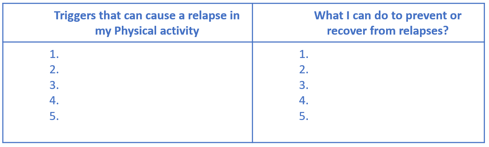
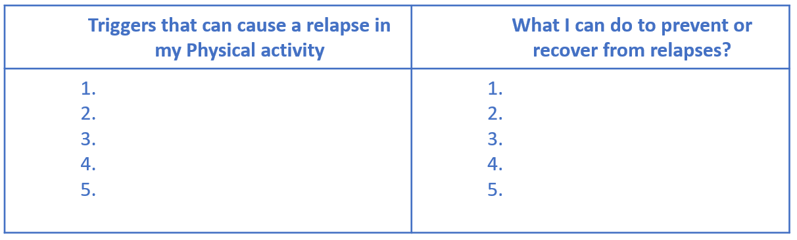

TASK 7: Keeping on track
Fill out a form like the following:

What are the things that can stop you achieving your own physical activity goals? And if these happen, what prevention or recovery strategies might you use to recover from these relapses? In this task- we will develop a list of triggers that could cause a relapse in my physical activity and strategies that I can use to overcome them.
Fill out a form like the following:

Remember to come back to this list if you are finding it challenging to keep up your physical activity plans. It is personal to you and if you do find yourself in the relapse stage it will be a great tool to help get you back on track!